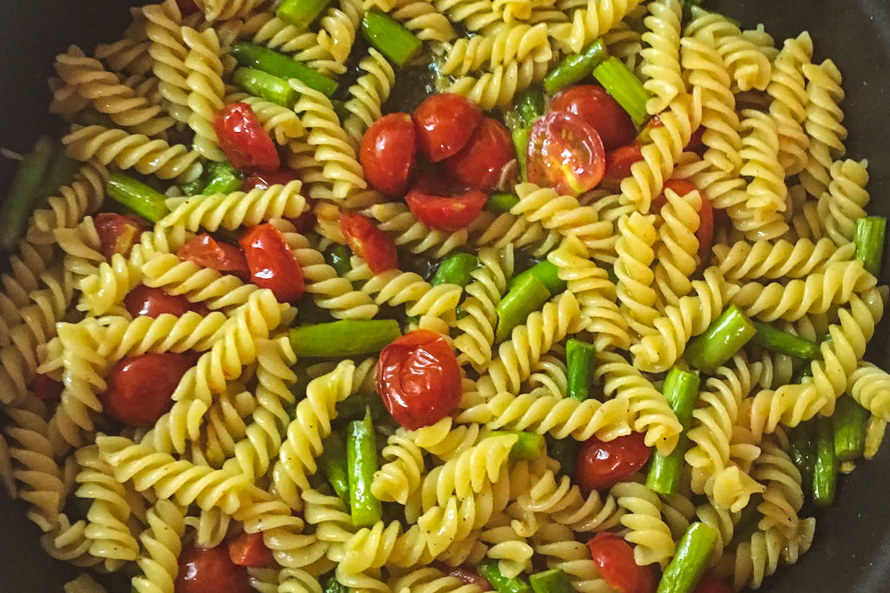

carefully curated opinions about the best (and worst) bars, restaurants, hotels, recipes, art and design across the world
Recipe
I ain't Fusillien around...

Summer asparagus & cherry tomato pasta in garlic and oil with fresh basil and mint
Prep time: 15 minutes | Cook time: 10 minutes
Serves 2 (if you want more... just double it ::wink::)†
There are people out there who "don't cook". I'll never understand those people. It's so easy. You will impress your friends, loved ones, significant others (or potential significant others). It's cheap. It's delicious, and you can drink wine doing it.
That said, you know what the problem with other recipe sites is? (do you have the feeling I'm gonna tell you anyway?)
They're confusing, they're hard to follow, and they don't tell you things in plain language, especially for people who don't know how to cook. We're giving you tips and tricks and simple but delicious recipes, in plain language (with bonus wine tips!). What's not to love?
Ingredients
- 4 ounces fusilli pasta
- 1/4 cup of extra virgin olive oil
(or just enough to coat the pan)† - 4 garlic cloves*, rough chopped
- (generous) pinch of red pepper flakes
- 1/2 pound asparagus,
- Salt and freshly ground black pepper
- 2 cups cherry tomatoes
- 1 cup Parmesan
- A Handful of fresh basil and mint
* a note about the garlic. Any self-respecting Italian will tell you, "always double the garlic the recipe calls for". We already did it for you. If you don't like garlic, you probably won't like most of the recipes here. Perhaps check out the wine and cocktails section. Some of those don't contain garlic.
† a note about the olive oil. If you're doubling the recipe... no need to double the olive oil. 1/4 cup is fine..unless you're into that sorta thing, then 1/2 cup of oil is fine.
Steps
(we put the important stuff in bold, so you can easily find it while simultaneously following along, frantically cooking and drinking wine)
- Pour yourself a glass of wine. This is probably the most important step. (Seriously. Who doesn't drink wine when cooking Italian food?) A great (and cheap!) red wine option we like is the Evodia Garnacha ($9). Read about it, and it's 2005 inspired label design here.
- Get yourself a handheld strainer, or pot with the strainer built in (I don't like these. I don't know why. Too much metal? But do what you want. It's your life). A handheld strainer is going to make your pasta making life a lot easier. If you don't have a handheld strainer... it's ok, you can still make the recipe, just make sure to reserve some cooking water. But next time you're at your neighborhood cooking supplier, on the Bowery or in Kappabashi... remember to pick one up (trust me)
- Fill a large pasta pot with water and set to boil. Generously salt the water.
Note: it's VERY important to use a LARGE pot FILLED with water (Just like Grandma used to do). You want a rolling rapid boil and you want the water to keep that boil when you put the pasta in, otherwise the pasta cooks unevenly. - Add the pasta to the boiling water, set a timer for 8 minutes (the bag is gonna tell you 10 minutes for al dente. Don't listen to them.)
- Heat the olive oil over medium heat and sauté the garlic. (Pro tip: sautee for 30 seconds, lift pan off the heat and swirl the pan, using your wrist, so the olive oil cools slightly. repeat 3-4 times. You really want to infuse that oil with as much garlic flavor as possible without burning the garlic).
- add a pinch of red pepper flakes (I'll leave it up to you)
- add the cherry tomatoes to the pan and season with a little salt and pepper. cook for a couple minutes over medium heat
- At this point the pasta should have a minute or so to go. With a minute left, drop the asparagus into the pasta water.
- when the timer goes off, transfer the pasta and asparagus to the tomatoes in the pan. Add a little bit of the pasta water to the pan... just enough to cover the bottom.
- Cook everything together for a couple minutes, stirring so it's all incorporated.
- Taste the pasta. This is the 2nd most important step. So many people don't taste the food as they make it. What the hell is wrong with you? If it needs pepper, add it. if it needs salt, just a little (remember you're adding Parmesan, which has salt in it)
- Turn off the heat. add the Parmesan, the basil and the mint. stir to combine. Wait a minute and let everything rest (this will further combine the flavors, making for a better tasting dish)
- Top with a little more Parmesan and a turn of black pepper (if you're into that kind of thing) and serve
These are also worth your time

A global branding , design & consulting agency from NYC, in Tokyo. We're big in Australia.